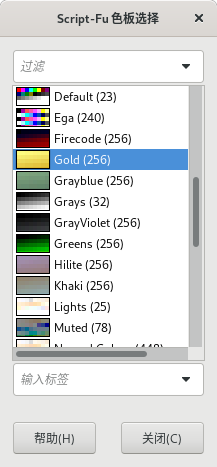
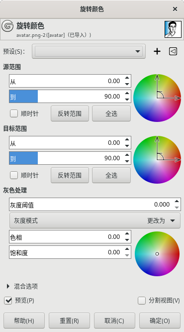
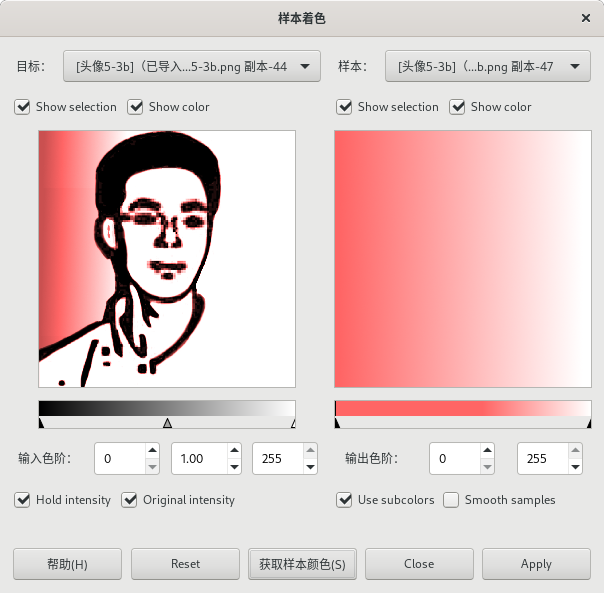

颜色→映射 Map
设置颜色表 Set Colormap
此命令可以选择其它调色板来替换当前索引图像的颜色表。
颜色→映射→设置颜色表
点击调色板右侧的按钮(上图显示为Default)，可以打开 色板选择 对话框：
颜色→映射→设置颜色表⇒选择调色板
在这里选中一个色板，点击 关闭 按钮，再点击 确定 按钮，就可以完成颜色表替换。
此命令针对索引模式图像，所以，如果您的图像模式是RGB模式或灰度模式，此菜单项会显示为灰色不可用。
重新整理颜色表 Rearrange Colormap
此命令可以重新排列当前索引图像的调色板中的颜色顺序。
此命令不会修改图像；您不能添加或删除颜色。
在颜色表中，可以用鼠标拖放来改变顺序，数字表示原索引；在色块上点击鼠标右键可以显示弹出操作菜单。
奇异映射 Alien Map
使用三角函数来映射色值，会导致图像颜色严重偏离原本的效果。
旋转颜色 Rotate Colors
颜色→映射→旋转颜色
此命令可以把一个颜色范围替换为另一个颜色范围，操作时可以通过图形操作，也可以通过数值操作，兼顾直观和精确。操作时，请随时观察右侧色盘上的变化。
预设
此选项是通用参数，详细说明请参考图层→透明⇒对话框通用参数。
源范围
指的是原图像中需要被替换的颜色范围，即这个范围内的颜色会被换掉。
从：被替换颜色范围的起点，因为是通过色盘来选择，所以范围是0°-360°。
到：被替换颜色范围的终点，因为是通过色盘来选择，所以范围是0°-360°。
顺时针：默认范围为逆时针，勾选此项可改为顺时针。
反转范围：“从”和“到”的数值互换。
全选：0°-360°全包括。
灰色处理
阈值：您可以设定一个阈值，饱和度低于此阈值的像素，会被处理成灰色(R=G=B)。
灰度模式：设定右方色盘中心灰度“定义圈”的规则。
更改为：直接采用定义圈所定义的颜色。
视为：根据上面“源范围”和“目标范围”的设定，在旋转后灰度“定义圈”所定义的颜色。
色相{Hue}：灰度“定义圈”的色相。
饱和度：灰度“定义圈”的饱和度。
混合选项/预览/分割视图
这三项是通用参数，详细说明请参考图层→透明⇒对话框通用参数。
渐变映射 Gradient Map
此命令使用当前的渐变，对图像的活动图层或选区重新进行着色。
使用此命令前，要先选择一个渐变。然后，对选区或图层执行此命令即可。
此命令使用图像颜色的强度{intensities}(0-255)，将最暗的像素映射到渐变的最左端颜色，将最亮的像素映射到渐变的最右端颜色，中间像素映射为相应的中间色。
示例：
左:原图 中:当前渐变设置为从红到白 右:执行 渐变映射
色板映射 Palette Map
此命令会使用当前调色板中的颜色对图像进行重新着色。
当前调色板在菜单 窗口→可停靠对话框→色板 中选择。
此命令把图层或选区与活动调色板进行映射：计算每个像素的亮度，并将像素替换为相应索引的调色板颜色。一个完全黑色的像素映射为调色板中最前面(编号最小)的颜色，而完全白色的像素映射为调色板中最后面(编号最大)的颜色。
样本着色 Sample Colorize
此命令可以使用指定的颜色范围对目标图像进行重新着色。
颜色→映射→样本着色
左边是目标图像，右边是样本图像；此命令用右边的样本图像给左边的目标图像重新着色。(上图中左侧目标图像是已经被着色后的效果)
如果您的GIMP打开多个图像，可以在上方的下拉菜单中选择不同的图像来作为目标和样本。
另外，样本可以使用当前的渐变，而不限于图像。
显示选区{Show selection}
可以缩放预览图到选区范围。
显示颜色{Show color}
可以切换彩色和灰度效果。
获取样本颜色
点击此按钮后，样本预览下方的渐变条会显示样本颜色。
输入色阶
限制目标图像中可以被影响的色阶范围。上方滑块同理。
输出色阶
限制样本中可以使用的色阶范围，这个范围内的颜色会被用来对目标图像进行着色。上方滑块同理。
保持强度{Hold intensity}
勾选此项后，目标图像的平均光强度与样本图像保持相同。
原始强度{Original intensity}
勾选此项后，会忽略输入色阶的强度，使用目标图像的原始强度。
Use subcolors
勾选此项后，颜色会混合应用到具有该明度{Value}的像素。
Smooth samples
如果样本的颜色很少，过渡可能会不平滑，可以勾选此选项来改善平滑效果。